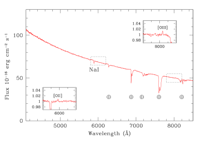
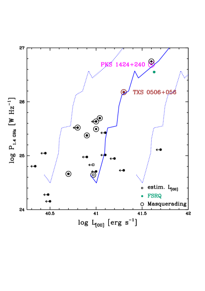
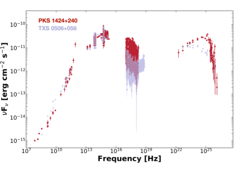

PKS 1424+240: جرم BL Lac متنكر آخر بوصفه مصدراً محتملاً لنيوترينوات IceCube
الملخص
نبيّن أن البلازار PKS 1424+240، الذي ربطه IceCube حديثاً بفائض من النيوترينوات عند مستوى مع ثلاثة مصادر أخرى، يشبه أول مصدر نيوترينوات غير نجمي مرجح، TXS 0506+056، من حيث إنه أيضاً جرم BL Lac متنكر، أي إنه جوهرياً كوازار راديوي ذو طيف مسطح بخطوط عريضة خفية وقرص تراكم قياسي. ونشير إلى أن هذين المصدرين يتقاسمان خصائص أخرى، تشمل التوزيع الطيفي للطاقة، والقدرات العالية، وخصائص مقياس الفرسخ الفلكي، وربما المورفولوجيا الراديوية. ونفترض أن الجمع النادر نسبياً بين نفاثات محملة بالبروتونات، ربما يكون نمطياً في المصادر عالية الإثارة، وعمليات تسريع جسيمات فعالة، مرتبطة بترددات ذروة سنكروترونية مرتفعة نسبياً لديها، قد يفضّل إنتاج النيوترينوات في هذين المصدرين. ويبدو أيضاً أن GB6 J1542+6129، الذي ظهر حديثاً مرتين أيضاً في قائمة ارتباطات IceCube، ينتمي إلى هذا الصنف الفرعي النادر من البلازارات، الذي لا يضم أكثر من من بلازارات Fermi-4LAC.
keywords:
النيوترينوات — آليات الإشعاع: غير حرارية — المجرات: نشطة — أجرام BL Lacertae: عامة — المتصل الراديوي: المجرات — أشعة غاما: المجرات1 المقدمة
قبل تسع سنوات، رصد مرصد IceCube للنيوترينوات11 1 http://icecube.wisc.edu أول نيوترينوات فيزيائية فلكية عالية الطاقة ذات أصل خارج مجري مرجح، بطاقات تصل إلى PeV ( eV)، ومنذ ذلك الحين أنتج قائمة مطّردة من الأحداث (مثلاً Aartsen et al., 2020, والمراجع الواردة فيها). ومع ذلك، وحتى الآن، لم تُربط إلا جرمان فلكيان بدلالة أكبر من بهذه النيوترينوات الفيزيائية الفلكية. وهما، تحديداً، البلازار TXS 0506+056 (IceCube Collaboration et al., 2018a; IceCube Collaboration, 2018b) عند والمجرة المحلية () من نوع Seyfert 2 NGC 1068. فقد أبلغ Aartsen et al. (2020) في الواقع عن فائض من النيوترينوات عند مستوى من اتجاه NGC 1068 وعن فائض قدره في السماء الشمالية بسبب قيم p مهمة في اتجاهات NGC 1068 وثلاثة بلازارات: TXS 0506+056، وPKS 1424+240، و GB6 J1542+6129.
أظهر Padovani et al. (2019) أن TXS 0506+056، رغم مظهره، ليس بلازاراً من نوع BL Lac، بل هو بدلاً من ذلك جرم BL Lac متنكر، أي كوازار راديوي ذو طيف مسطح (FSRQ22 2 استناداً إلى التحليل الطيفي البصري، تُصنَّف البلازارات إلى FSRQs وأجرام BL Lac، إذ تُظهر الأولى خطوط انبعاث قوية وعريضة شبيهة بالكوازارات، بينما تكون أطياف الثانية غالباً خالية تماماً من المعالم، وتعرض أحياناً خطوط امتصاص وانبعاث ضعيفة (مثلاً Urry & Padovani, 1995).) تغمر خطوطَ انبعاثه نفاثة شديدة السطوع ومعززة دوبلرياً، على خلاف أجرام BL Lac «الحقيقية»، التي تكون بدلاً من ذلك ضعيفة الخطوط جوهرياً. وهذا وثيق الصلة للغاية لسببين: (1) تنتمي أجرام BL Lac «الحقيقية» وFSRQs إلى صنفين فيزيائيين مختلفين جداً، أي أجرام بلا خطوط انبعاث عالية الإثارة وأجرام ذات خطوط انبعاث عالية الإثارة في أطيافها البصرية، ويشار إليها على التوالي بالمجرات منخفضة الإثارة (LEGs) وعالية الإثارة (HEGs) (e.g. Padovani et al., 2017, and references therein)؛ (2) تستفيد أجرام BL Lac المتنكرة، لكونها HEGs، من عدة حقول إشعاعية خارج النفاثة (أي قرص التراكم، أو الفوتونات المعاد معالجتها في منطقة الخطوط العريضة (BLR) أو الصادرة من الطارة الغبارية)، والتي قد تعزز إنتاج النيوترينوات مقارنةً بـ LEGs من خلال توفير أهداف أكثر للبروتونات.
تهدف هذه الرسالة إلى: (1) التحقق مما إذا كان البلازار الثاني في قائمة Aartsen et al. (2020)، PKS 1424+240، مؤهلاً أيضاً بوصفه جرم BL Lac متنكر؛ (2) فحص ما إذا كان TXS 0506+056 وPKS 1424+240 (وGB6 J1542+6129) يتقاسمون خصائص أخرى ذات صلة. نستخدم كوسمولوجيا CDM بثابت هابل km s-1 Mpc-1، وكثافة مادة ، وكثافة طاقة مظلمة . وتُعرَّف المؤشرات الطيفية بالعلاقة حيث إن هو التدفق عند التردد .
2 المصدر
2.1 البيانات الفلكية الرئيسية
يُعد PKS 1424+240 واحداً من أبعد البلازارات المرصودة في نطاق TeV، ويحتل المرتبة السابعة في TeVCat33 3 http://tevcat.uchicago.edu/ وقت الكتابة، و«مثالاً نادراً على HBL لامع44 4 تُقسَّم البلازارات فرعياً على أساس تردد الإطار الساكن لحدبتها منخفضة الطاقة (السنكروترونية) () إلى مصادر ذات ذروة منخفضة (LBL/LSP: Hz [ 0.41 eV])، ومتوسطة (IBL/ISP: Hz Hz [0.41 – 4.1 eV])، وعالية الطاقة (HBL/HSP: Hz [ 4.1 eV])، على التوالي (Padovani & Giommi, 1995; Abdo et al., 2010).» (Cerruti et al., 2017). وقد قُدّر الخاص به بنحو Hz، تبعاً لحالته (Abdo et al., 2010; Archambault et al., 2014).

إن لتحديد الانزياح الأحمر لـ PKS 1424+240 تاريخاً ملتبساً. وقد حسم Paiano et al. (2017) هذه المسألة، إذ رصد خطي انبعاث خافتين عند 5981 و8034 Å وعرّفهما مع [O ii] 3727 Å و [O iii] 5007 Å، بعرضين مكافئين قدرهما 0.05 و0.10 Å على التوالي، عند (الشكل 1). كما أن هذا الانزياح الأحمر متسق مع وجود مجموعة مجرات عند مرتبطة على الأرجح بالمصدر (Rovero et al., 2016). وتدل هذه الرصود على قدرات خطية مقدارها erg s-1 و erg s-1.
وبما أنه لا تظهر أي علامة للمجرة المضيفة في الطيف البصري، فلا يمكننا تفكيكه إلى قانون قدرة غير حراري وقالب لمجرة إهليلجية من أجل تقدير كتلة الثقب الأسود، (مثلاً Padovani et al., 2022, المشار إليه فيما بعد بـ P22؛ انظر ملحقهم من أجل التفاصيل). ومع ذلك، يمكننا وضع حد أعلى على erg s-1 بافتراض أن لهذا الخط عرضاً كاملاً عند نصف القيمة العظمى مقداره 10,000 km s-1. وباستخدام المعادلة (5) والجدول 2 في Shaw et al. (2012) نستنتج بعد ذلك (حيث إن كتلة شمسية واحدة). لاحظ أن هذا حد أعلى متين جداً، ولا يزيد إلا قليلاً على القيمة التي يحصل عليها المرء بافتراض أن المجرة المضيفة إهليلجية عملاقة نموذجية (: P22)، وهو ما يترجم إلى قدرة إدنغتون erg s-1، مع erg s-1.
2.2 توصيف المصدر

ندّعي أن PKS 1424+240 مثال آخر على جرم BL Lac متنكر مرتبط بنيوترينوات IceCube. واتباعاً لـ Padovani et al. (2019) وP22، يستند هذا التصنيف إلى أربعة معايير:
-
1.
موقعه على مخطط القدرة الراديوية – قدرة خطوط الانبعاث، – (الشكل 4 في Kalfountzou et al., 2012)، الذي يحدد موضع الكوازارات النفاثة (الراديوية الصاخبة). ومع كثافة تدفق مفهرسة عند 1.4 GHz مقدارها 0.43 Jy ومؤشر طيفي راديوي (NASA/IPAC Extragalactic Database) تكون W Hz-1، وهي، مع erg s-1، تضع هذا المصدر تماماً على ذلك الموضع، كما يبين الشكل 2؛
-
2.
قدرة راديوية W Hz-1، نمطية لـ HEGs؛
-
3.
نسبة إدنغتون ، ومن ثم ، وهي أيضاً إحدى الخصائص المحددة لـ HEGs. وهذه هي النسبة بين اللمعانية المرصودة المرتبطة بالتراكم ولمعانية إدنغتون. ويُستمد تقدير الأولى من و، كما هو مفصل في Padovani et al. (2019). ونحصل على erg s-1 ولمعانية BLR مقدارها erg s-1؛
-
4.
نسبة إدنغتون في أشعة مقدارها ، ولذلك فهي أعلى من خط الفصل المقترح بين أجرام BL Lacs «الحقيقية» وFSRQs (0.1: Sbarrato et al. 2012). وفي الواقع، فإن erg s-1 (0.1 – 100 GeV)، كما يُستنتج من تدفق الطاقة ومؤشر الفوتونات في فهرس مصادر Fermi-LAT الرابع (4FGL-DR2) (Abdollahi et al., 2020; Ballet et al., 2020). ونؤكد أنه، بسبب قيمة الكبيرة جداً لديه، يقع PKS 1424+240 خارج حدود الشكل 2 في P22 (مخطط )، وهو متطرف إلى حد كبير من حيث موقعه في الشكل 3 (مخطط – ) في الورقة نفسها.
وباختصار، يستوفي PKS 1424+240 جميع المعايير المذكورة أعلاه ليُصنف
جرماً من نوع BL Lac متنكر.

2.3 أوجه التشابه بين PKS 1424+240 وTXS 0506+056
بصرف النظر عن كون كليهما جرمين متنكرين من نوع BL Lac، توجد أوجه مشتركة أخرى عديدة بين PKS 1424+240 وTXS 0506+056، تجعل منهما بلازارين مميزين وغير مألوفين إلى حد ما. وهي تحديداً:
-
1.
كلاهما IBL/HBL شديد القدرة، إذ إن TXS 0506+056 يمتلك W Hz-1 و erg s-1، أي أصغر بمقدار مرة من قيم PKS 1424+240؛
-
2.
إن التوزيعات الطيفية للطاقة الكلية للمصدرين متشابهة جداً، سواء في التطبيع أو في الشكل. ويتضح ذلك من الشكل 3، الذي يعرض التوزيع الطيفي للطاقة لـ PKS 1424+240 (بالأحمر) مع نظيره لـ TXS 0506+056 (بالرمادي). إن الأجزاء منخفضة الطاقة من التوزيعين الطيفيين للطاقة تكاد تكون متطابقة، بينما توجد بعض الفروق في نطاقي الأشعة السينية وأشعة ، ويرجع ذلك في الغالب إلى ارتفاع متوسط في PKS 1424+240؛
-
3.
إن خصائصهما على مقياس الفرسخ الفلكي، المستنتجة من دراسات قياس التداخل ذي الخط القاعدي الطويل جداً (VLBI)، أقرب بكثير إلى خصائص HBLs منها إلى خصائص FSRQs. وتكون درجة حرارة السطوع المرصودة لنواة VLBI السنتيمترية، ، منخفضة نسبياً في كلتا الحالتين، بقيم وسطية في PKS 1424+240 و في TXS 0506+056 (Homan et al., 2021)، أي قريبة من قيمة التساوي الطاقي ( : Readhead 1994)، ومن ثم فهي تشير إلى تعزيز دوبلري متواضع. ويدعم ذلك أيضاً قياس الحركات الخاصة، الذي يكشف سرعات ظاهرية منخفضة مقدارها (Lister et al., 2019) و (Lister et al., 2021) لكل من PKS 1424+240 وTXS 0506+056 على التوالي. أما FSRQs، ولا سيما القوية في أشعة ، فتتسم بدلاً من ذلك بقيم وسطية لدرجة حرارة سطوع النواة تقترب من حد كارثة كومبتون العكسية وغالباً ما تتجاوزه55 5 كارثة كومبتون العكسية هي التبريد السريع عبر تشتت كومبتون العكسي لمنطقة باعثة للسنكروترون، وهو ما يعني درجة حرارة عتبية (Kellermann, Pauliny-Toth, & Williams, 1969). بسبب تعزيز دوبلري قوي (Kovalev et al., 2009)، وكذلك بسرعات ظاهرية عظمى أعلى بكثير (، مثلاً Jorstad et al. 2017). ويقدّر Homan et al. (2021) عوامل دوبلر ولورنتز منخفضة نسبياً، و لـ TXS 0506+056، و و لـ PKS 1424+240، كما يوجد عادةً في HBLs (Piner & Edwards, 2018, والمراجع الواردة فيه).66 6 يستنتج Homan et al. (2021) بافتراض أن لجميع المصادر درجة حرارة سطوع وسطية جوهرية واحدة تساوي وسيط العينة، K؛ ومن ثم . وهذه المقاربة على مستوى الجمهرة، رغم ملاءمتها للقيم المتوسطة، قد لا تكون أنسب مقاربة للمصادر الفردية. كما يتسق عامل لورنتز المنخفض نسبياً مع زوايا فتح النفاثة الظاهرية الكبيرة في كلا المصدرين (28∘ و65∘ لـ TXS 0506+056 وPKS 1424+240، على التوالي، وهما فوق القيمة الوسطية 22.6∘ الموجودة لمصادر أشعة في عينة MOJAVE، انظر Pushkarev et al., 2017). وفي الواقع، وُجد أن الفتحة الجوهرية لمخروط التعزيز تتناسب عكسياً مع ، ما يعني أن النفاثات الأبطأ ستبدو أقل توازيًا. وخلاصة القول، إنه على الرغم من أن هذين المصدرين يمتلكان قرصاً قياسياً (Shakura - Sunyaev)، مثل FSRQs، فإن خصائص VLBI لنفاثتيهما ليست شبيهة بخصائص FSRQ؛
-
4.
إن قدرتهما الراديوية الممتدة، ، مرتفعة نسبياً، واضعةً المصدرين في نظام وسيط بين أجرام Fanaroff-Riley (FR) I وII (Fanaroff & Riley, 1974)، أو بالأحرى أقرب إلى مجال FRII ( W Hz-1 عند 1.4 GHz). وتكشف صور المصفوفة الكبيرة جداً (VLA) لـ PKS 1424+240 عند 1.4 GHz بنية متناظرة ثنائية الجانب، بكثافة تدفق ممتدة (الشكل 12، Rector, Gabuzda, & Stocke, 2003)، مما يعني W Hz-1 ()، عند الطرف الأدنى من مصادر FRII. ولم تُحل أي انبعاثات راديوية ممتدة في TXS 0506+056 على مقاييس الكيلوفرسخ (kpc)، لكن يمكن الحصول على تقدير لكثافة التدفق الراديوي الممتد بمقارنة بيانات VLBI مع قياسات أحادية الطبق شبه متزامنة حصل عليها تلسكوب مرصد Owens Valley الراديوي. وقد بيّن Li et al. (2020) أن الانبعاث الممتد يسهم بما بين 1 و18 في المئة من الإجمالي، ومن ذلك، وبما أن النسبة الأصغر مرتبطة بأكبر كثافة تدفق كلية (والعكس بالعكس)، نقدّر كثافة تدفق ممتدة في المجال 15 – 54 mJy، أي عند 15 GHz. وهذا يعني W Hz-1 عند 1.4 GHz من أجل ، وهي قريبة من حد الفصل بين FRI وFRII. وتشيع المصادر المصنفة على أنها BL Lacs لكنها تُظهر قدرات ومورفولوجيات راديوية ممتدة وسيطة أو شبيهة بـ FRII بين عينات البلازارات الساطعة (Rector & Stocke, 2001; Kharb, Lister, & Cooper, 2010). غير أن هذا ينطبق أساساً على LBLs، في حين أن خصائص HBLs تطابق خصائص جمهرتها الأم المتوقعة، وهي المجرات الراديوية من نمط FRI (Rector & Stocke, 2001; Giroletti et al., 2004). فعلى سبيل المثال، تملك HBLs في Einstein Extended Medium Sensitivity Survey، المتصفة بـ ()، قيماً (و) W Hz-1 عند 1.4 GHz (Rector & Stocke, 2001). لذلك، يبدو PKS 1424+240 وTXS 0506+056 مثالين نادرين على IBLs/HBLs ذات قدرات راديوية شبيهة بـ FRII. وإذا كانت القدرة الراديوية الممتدة وكيلاً جيداً عن القدرة الكلية للنفاثة (e.g. Willott et al., 1999)، فينبغي أن تكون الأخيرة أيضاً في نظام FRII. كما تُستنتج قدرات نفاثة عالية erg s-1 لكلا المصدرين استناداً إلى نمذجة SED (مثلاً Aleksić et al. 2014; Ansoldi et al. 2018)، وهي أكبر بكثير من قيم HBLs منخفضة الانزياح الأحمر مثل MKN 421 وMKN 501 ( erg s-1: Potter & Cotter 2015)؛
-
5.
أما مسألة المورفولوجيا الراديوية فمن الصعب معالجتها. فـ TXS 0506+056 غير محلول على مقاييس kpc، لكن خصائص نفاثة VLBI قد تكون متسقة مع تطور مورفولوجيا FRI. وفي الواقع، فإن الازدياد السريع في زاوية فتح النفاثة مع المسافة، المرصود في صور VLBI عند 43 GHz، فُسّر من قبل Ros et al. (2020) بوصفه دليلاً محتملاً على تباطؤ النفاثة عند pc من BH، وهي عملية يُعرف أنها تؤدي إلى تشكل نفاثة FRI (Laing & Bridle, 2014). وتعرض صورة VLA لـ PKS 1424+240 التي قدمها Rector, Gabuzda, & Stocke (2003) سمات مختلطة، تحتاج إلى فحص أفضل بدقة أعلى: فالبنية تذكّر بمصدر FRII متوهج الحواف، لكن التناظر الخشن للنفاثة ثنائية الجانب قد يدل على تباطؤ كما يُرصد في FRIs. وخلاصة القول، إن احتمالاً مثيراً للاهتمام يحتاج إلى مزيد من الاستكشاف هو أن PKS 1424+240 وTXS 0506+056 قد ينتميان إلى الصنف النادر من المصادر المتراكمة بكفاءة، التي تطور مورفولوجيا نفاثة FRI، أي FRI-HEGs (مثلاً Heckman & Best, 2014). فمثلاً، تحتوي عينة من مصادر راديوية ممتدة مختارة عند 1.4 GHz من Sloan Digital Sky Survey مع على 5/245 فقط، أي 2 في المئة، من FRI-HEGs (Miraghaei & Best, 2017). وحتى لو كان الأمر كذلك، فإن هذه المصادر يجب مع ذلك أن تكون مصادر ذات مورفولوجيا FRI وقدرات نفاثة شبيهة بـ FRII، كما نوقش أعلاه.
2.4 GB6 J1542+6129
أجرى IceCube Collaboration et al. (2021) بحثاً عن انبعاث نيوترينوات توهجي في بيانات IceCube الممتدة على 10 سنة، وأبلغوا عن فائض نيوترينوات تراكمي معتمد على الزمن في نصف الكرة الشمالي عند مستوى 3 مرتبط بأربعة مصادر فقط: مجرة راديوية، M87، وبلازارين هما TXS 0506+056 وGB6 J1542+6129، ومجرة Seyfert 2 NGC 1068، وهذه المصادر الثلاثة الأخيرة مرتبطة أيضاً بالنيوترينوات وفق Aartsen et al. (2020). وقد ظهر GB6 J1542+6129، وهو IBL (Giommi & Padovani, 2021)، مرتين خلال سنتين في قائمة تضم ارتباطات لـ IceCube، ومن ثم فهو يستحق التحري أيضاً. والانزياح الأحمر لهذا الجرم غير متاح: كل ما نعرفه هو أن (Shaw et al., 2013)، وهو ما يترجم إلى W Hz-1 و (من أجل ، أي بافتراض أن المجرة المضيفة إهليلجية عملاقة نموذجية: القسم 2.1). وكلتا القيمتين متسقتان تماماً مع تصنيف جرم BL Lac متنكر (القسم 2.2). ومن البيانات التي قدمها Homan et al. (2021) نستنتج K، و، و، و لمجال الانزياح الأحمر المعتمد. لذلك فإن و صغيران نسبياً أيضاً، ما يشير إلى أن GB6 J1542+6129 يتقاسم خصائص راديوية مشابهة مع المصدرين الآخرين.
3 المناقشة والخلاصة
تبرز الخصائص الموصوفة للتو خصوصيات PKS 1424+240 وTXS 0506+056، وقد تكون ذات صلة في سياق نماذج انبعاث النيوترينوات. وعلى وجه الخصوص، تتعلق مسألة أساسية بتركيب جسيمات النفاثة، إذ إن انبعاث النيوترينوات يتطلب وجود بروتونات نسبية. وقد يحدث تحميل الجسيمات الثقيلة في النفاثة إما في عملية تشكل النفاثة أو أثناء انتشارها، كنتيجة لاكتساح الغاز والنجوم من البيئة. ويُعتقد أن النفاثات المتشكلة عبر آلية Blandford-Znajeck (Blandford & Znajek, 1977) خفيفة، إذ تتكون أساساً من أزواج إلكترون-بوزيترون، بينما تُحمّل النفاثات المطلقة من القرص (مثلاً Blandford & Payne, 1982) مباشرةً بمادة القرص، ومن المرجح أن تكون أثقل وأبطأ (انظر أيضاً Hawley & Krolik, 2006; McKinney, 2006; Broderick & Tchekhovskoy, 2015). وإذا حدثت الآليتان كلتاهما في الوقت نفسه في نواة مجرية نشطة، فقد يحدث تبادل للكتلة، ربما تفضله نشأة لااستقرارات مغناطيسية-هيدروديناميكية، بين النفاثة النسبية المركزية ورياح القرص الثقيلة المحيطة (انظر مثلاً النقاش لدى Sikora, Stawarz, & Lasota, 2007). كما أن اختلاط الجسيمات الثقيلة واكتساحها من الوسط المحيط ممكنان أيضاً، خصوصاً على المقاييس الأكبر حين تتباطأ النفاثة وتتفكك. وفي الواقع، تمكن Croston, Ineson, & Hardcastle (2018) من تقييد تركيب بلازما الفصوص الراديوية في عينات من مصادر FRI وFRII، مبينين أن النفاثات المتباطئة في FRIs تتطلب محتوى بروتونياً أقوى مقارنةً بـ FRIIs. وأظهر هؤلاء المؤلفون أيضاً أن هذه الظاهرة مستقلة عن نمط التراكم في النواة المجرية النشطة، إذ ترتبط ارتباطاً وثيقاً بالتفاعل القوي بين النفاثة والبيئة، وهو ما يميز مصادر FRI.
غير أن أكثر الظواهر طاقة في النفاثة، المؤدية إلى إنتاج أشعة حتى نظام TeV، معروفة بأنها تحدث على مسافات أصغر من BH، على مقاييس دون الفرسخ والفرسخ (مثلاً Madejski & Sikora, 2016, والمراجع الواردة فيه). لذلك فإن تركيب النفاثة الأقرب إلى المحرك المركزي قد يكون الأهم فيما يتعلق بإنتاج النيوترينوات. وعلى خلاف السيناريو الموصوف أعلاه للمقاييس الأكبر، تشير نمذجة الانبعاث عريض النطاق للنفاثة (Celotti & Fabian, 1993; Sikora et al., 2005) والدراسات الرصدية للاستقطاب الدائري للنفاثة (Homan et al., 2009) إلى أن ديناميكيات النفاثات القوية تهيمن عليها البروتونات على مقاييس VLBI. أما خصائص نفاثة FRI في LEG M 87 على مقياس الفرسخ، من جهة أخرى، فهي متسقة مع هيمنة بلازما الأزواج (Reynolds et al., 1996; Broderick & Tchekhovskoy, 2015)، وبوجه عام تبدو فرضية النفاثات الخفيفة ملائمة لنمذجة تباطؤ النفاثات في FRIs (Laing & Bridle, 2002, 2014). وقد يعكس هذا الاختلاف المحتمل في تركيب النفاثة اختلافاً في آلية تشكل النفاثات في LEGs (FRIs وFRIIs) وHEGs (معظمها FRIIs وعدد قليل من FRIs). واستناداً إلى تحليل ملامح توازي النفاثات، اقترح Boccardi et al. (2021) أن رياحاً قرصية أكثر امتداداً وبروزاً تحيط بالعمود الفقري النسبي في HEGs، في حين أن ملامح تمدد النفاثات في معظم LEGs متسقة مع أصل للنفاثة قرب الإرغوسفير، كما رُصد مباشرةً في M 87. وتدعم هذه النتائج فكرة أن النفاثات في HEGs محملة بالبروتونات بدرجة أكبر على مقاييس دون الفرسخ والفرسخ.
ومن ثم يترتب على ذلك أن إنتاج النيوترينوات قد يكون مفضلاً في مصادر مثل PKS 1424+240 وTXS 0506+056. فإذا كانت النفاثات التي تنتجها HEGs محملة فعلاً بالبروتونات على نحو أكبر، وإذا كانت البروتونات والإلكترونات تُسرّع في المناطق نفسها وبالآليات نفسها، فقد تكون النفاثات من IBL/HBL-HEGs هي المواضع التي تتحقق فيها بأفضل صورة الشروط اللازمة لإنتاج النيوترينوات. وهذه الشروط هي تحديداً: 1) تحميل بروتوني عال؛ 2) حدوث عمليات تسريع جسيمات فائقة الكفاءة. وفي هذا السيناريو لن تفي FSRQs بالمتطلب الثاني. إضافةً إلى ذلك، وكما ذكرنا أعلاه، فإن مساهمة عدة حقول إشعاعية خارجية نمطية لـ HEGs قد تعزز إنتاج النيوترينوات أكثر في أجرام BL Lac المتنكرة هذه.
ومع ذلك، فإن أي آلية فيزيائية قد تُستدعى لتفسير الانبعاث حتى طاقات TeV في PKS 1424+240 وTXS 0506+056 ينبغي أن تُوفّق مع عاملي و المنخفضين المرصودين على مقاييس الفرسخ. وقد اقتُرحت معظم حلول ما يسمى أزمة عامل دوبلر حتى الآن لحالة HBLs «الكلاسيكية» منخفضة القدرة. وتشمل هذه الحلول نماذج النفاثة المتباطئة قرب النواة (Piner & Edwards, 2004, والمراجع الواردة فيه) ونماذج الصدمة داخل النفاثة، التي تقترح أن السرعات الظاهرية المنخفضة تعكس تشكل صدمات شبه ساكنة في النفاثة (Hervet, Boisson, & Sol, 2016, والمراجع الواردة فيه). وما إذا كانت مثل هذه الحلول قابلة للتطبيق أيضاً على حالة النفاثات عالية القدرة في PKS 1424+240 وTXS 0506+056 هو موضوع لدراسة مستقبلية.
وخلاصةً، فإن PKS 1424+240، مثل TXS 0506+056، مثال آخر على جرم BL Lac متنكر مرتبط بفائض نيوترينوات من IceCube. ويتقاسم المصدران أيضاً خصائص أخرى، تشمل التوزيع الطيفي للطاقة، والقدرات العالية، وخصائص مقياس الفرسخ، وربما المورفولوجيا الراديوية. ونقترح أن الجمع بين نفاثات محملة بالبروتونات، قد تكون نمطية للمصادر عالية الإثارة، وتسريع جسيمات فعال تدل عليه ترددات الذروة السنكروترونية المرتفعة نسبياً لديها، قد يفضّل إنتاج النيوترينوات. وأخيراً، نلاحظ أن GB6 J1542+6129، الذي رُبط حديثاً أيضاً بالنيوترينوات، يبدو كذلك منتمياً إلى هذا الصنف الفرعي النادر جداً من البلازارات، مع أن تحديد انزياحه الأحمر سيساعد على تأكيد ذلك.
واستناداً إلى قدراتها الراديوية وقدرات أشعة العالية جداً، نقدر أن المصادر المشابهة تشكل 2.1 في المئة فقط من مجموع جمهرة IBL وHBL77 7 هذه هي نسبة المصادر ذات القدرات الراديوية وقدرات أشعة الأكبر من قدرات TXS 0506+056 في عينة IBL/HBL التي جمعها Giommi & Padovani (2021). ويمتلك GB6 J1542+6129 W Hz-1 و erg s-1.. وبما أن IBLs إضافةً إلى HBLs تشكل في المئة من بلازارات Fermi-4LAC (العينة النظيفة) ذات تصنيف SED (Ajello et al., 2020; Lott, Gasparrini, & Ciprini, 2020)، فإن البلازارات من النوع الذي ربطه IceCube بالنيوترينوات تشكل على الأكثر 1 في المئة من الجمهرة المختارة بأشعة ( مصدر)، لأننا لم ندرج في حسابنا خصائصها الغريبة الأخرى.
شكر وتقدير
نشكر Maria Petropoulou على تعليقاتها على الورقة. ويدعم هذا العمل Deutsche Forschungsgemeinschaft عبر المنحة SFB 1258 «النيوترينوات والمادة المظلمة في الفيزياء الفلكية وفيزياء الجسيمات».
إتاحة البيانات
الطيف المُعايَر تدفقياً والمصحح من الاحمرار متاح في قاعدة البيانات الإلكترونية ZBLLAC (http://web.oapd.inaf.it/zbllac/).
References
- Aartsen et al. (2020) Aartsen M. G., Ackermann M., Adams J., Aguilar J. A., Ahlers M., Ahrens M., Alispach C., et al., 2020, PhRvL, 124, 051103
- Abdo et al. (2010) Abdo A. A., Ackermann M., Ajello M., et al., 2010, ApJ, 716, 30
- Abdollahi et al. (2020) Abdollahi S., Acero F., Ackermann M., Ajello M., Atwood W. B., Axelsson M., Baldini L., et al., 2020, ApJS, 247, 33
- Ajello et al. (2020) Ajello M., Angioni R., Axelsson M., Ballet J., Barbiellini G., Bastieri D., Becerra Gonzalez J., et al., 2020, ApJ, 892, 105
- Aleksić et al. (2014) Aleksić J., Ansoldi S., Antonelli L. A., Antoranz P., Babic A., Bangale P., Barres de Almeida U., et al., 2014, A&A, 567, A135
- Ansoldi et al. (2018) Ansoldi S., Antonelli L. A., Arcaro C., Baack D., Babić A., Banerjee B., Bangale P., et al., 2018, ApJL, 863, L10
- Archambault et al. (2014) Archambault S., Aune T., Behera B., Beilicke M., Benbow W., Berger K., Bird R., et al., 2014, ApJL, 785, L16
- Ballet et al. (2020) Ballet J., Burnett T. H., Digel S. W., Lott B., The Fermi-LAT Collaboration, 2020, arXiv:2005.11208
- Blandford & Znajek (1977) Blandford R. D., Znajek R. L., 1977, MNRAS, 179, 433
- Blandford & Payne (1982) Blandford R. D., Payne D. G., 1982, MNRAS, 199, 883
- Boccardi et al. (2021) Boccardi B., Perucho M., Casadio C., Grandi P., Macconi D., Torresi E., Pellegrini S., et al., 2021, A&A, 647, A67
- Broderick & Tchekhovskoy (2015) Broderick A. E., Tchekhovskoy A., 2015, ApJ, 809, 97
- Celotti & Fabian (1993) Celotti A., Fabian A. C., 1993, MNRAS, 264, 228
- Cerruti et al. (2017) Cerruti M., Benbow W., Chen X., Dumm J. P., Fortson L. F., Shahinyan K., 2017, A&A, 606, A68
- Croston, Ineson, & Hardcastle (2018) Croston J. H., Ineson J., Hardcastle M. J., 2018, MNRAS, 476, 1614
- Fanaroff & Riley (1974) Fanaroff B. L., Riley J. M., 1974, MNRAS, 167, 31P
- Ghisellini, Tavecchio, & Chiaberge (2005) Ghisellini G., Tavecchio F., Chiaberge M., 2005, A&A, 432, 401
- Giommi & Padovani (2021) Giommi P., Padovani P., 2021, Universe, 7(12), 492
- Giroletti et al. (2004) Giroletti M., Giovannini G., Taylor G. B., Falomo R., 2004, ApJ, 613, 752
- Hardcastle & Croston (2020) Hardcastle M. J., Croston J. H., 2020, NewAR, 88, 101539
- Hawley & Krolik (2006) Hawley J. F., Krolik J. H., 2006, ApJ, 641, 103
- Heckman & Best (2014) Heckman T. M., Best P. N., 2014, ARA&A, 52, 589
- Hervet, Boisson, & Sol (2016) Hervet O., Boisson C., Sol H., 2016, A&A, 592, A22
- Homan et al. (2009) Homan D. C., Lister M. L., Aller H. D., Aller M. F., Wardle J. F. C., 2009, ApJ, 696, 328
- Homan et al. (2021) Homan D. C., Cohen M. H., Hovatta T., Kellermann K. I., Kovalev Y. Y., Lister M. L., Popkov A. V., et al., 2021, ApJ, in press (arXiv:2109.04977)
- IceCube Collaboration et al. (2018a) IceCube Collaboration, 2018, Science, 361, 147
- IceCube Collaboration (2018b) IceCube Collaboration et al., 2018, Science, 361, eaat1378
- IceCube Collaboration et al. (2021) IceCube Collaboration, Abbasi R., Ackermann M., Adams J., Aguilar J. A., Ahlers M., Ahrens M., Alispach C., et al., 2021, ApJL, 920, L45
- Jorstad et al. (2017) Jorstad S. G., Marscher A. P., Morozova D. A., Troitsky I. S., Agudo I., Casadio C., Foord A., et al., 2017, ApJ, 846, 98
- Kalfountzou et al. (2012) Kalfountzou E., Jarvis M. J., Bonfield D. G., Hardcastle M. J., 2012, MNRAS, 427, 2401
- Kellermann, Pauliny-Toth, & Williams (1969) Kellermann K. I., Pauliny-Toth I. I. K., Williams P. J. S., 1969, ApJ, 157, 1
- Kharb, Lister, & Cooper (2010) Kharb P., Lister M. L., Cooper N. J., 2010, ApJ, 710, 764
- Kovalev et al. (2009) Kovalev Y. Y., Aller H. D., Aller M. F., Homan D. C., Kadler M., Kellermann K. I., Kovalev Y. A., et al., 2009, ApJL, 696, L17
- Laing & Bridle (2002) Laing R. A., Bridle A. H., 2002, MNRAS, 336, 1161
- Laing & Bridle (2014) Laing R. A., Bridle A. H., 2014, MNRAS, 437, 3405
- Li et al. (2020) Li X., An T., Mohan P., Giroletti M., 2020, ApJ, 896, 63
- Lister et al. (2019) Lister M. L., Homan D. C., Hovatta T., Kellermann K. I., Kiehlmann S., Kovalev Y. Y., Max-Moerbeck W., et al., 2019, ApJ, 874, 43
- Lister et al. (2021) Lister M. L., Homan D. C., Kellermann K. I., Kovalev Y. Y., Pushkarev, A. B., Ros, E., Savolainen, T., 2021, ApJ, in press (arXiv:2108.13358)
- Lott, Gasparrini, & Ciprini (2020) Lott B., Gasparrini D., Ciprini S., 2020, arXiv:2010.08406
- Madejski & Sikora (2016) Madejski G., Sikora M., 2016, ARA&A, 54, 725
- McKinney (2006) McKinney J. C., 2006, MNRAS, 368, 1561
- Miraghaei & Best (2017) Miraghaei H., Best P. N., 2017, MNRAS, 466, 4346
- Padovani & Giommi (1995) Padovani P., Giommi P., 1995, ApJ, 444, 567
- Padovani et al. (2017) Padovani P., et al., 2017, A&AR, 25, 2
- Padovani et al. (2019) Padovani P., Oikonomou F., Petropoulou M., Giommi P., Resconi E., 2019, MNRAS, 484, L104
- Padovani et al. (2022) Padovani P., Giommi P., Falomo R., Oikonomou F., Petropoulou M., Glauch T., Resconi E., Treves A., Paiano S., 2022, MNRAS, 510, 2671 (P22)
- Paiano et al. (2017) Paiano S., Landoni M., Falomo R., Treves A., Scarpa R., Righi C., 2017, ApJ, 837, 144
- Piner & Edwards (2004) Piner B. G., Edwards P. G., 2004, ApJ, 600, 115
- Piner & Edwards (2018) Piner B. G., Edwards P. G., 2018, ApJ, 853, 68
- Potter & Cotter (2015) Potter W. J., Cotter G., 2015, MNRAS, 453, 4070
- Pushkarev et al. (2017) Pushkarev A. B., Kovalev Y. Y., Lister M. L., Savolainen T., 2017, MNRAS, 468, 4992
- Readhead (1994) Readhead A. C. S., 1994, ApJ, 426, 51
- Rector & Stocke (2001) Rector T. A., Stocke J. T., 2001, AJ, 122, 565
- Rector, Gabuzda, & Stocke (2003) Rector T. A., Gabuzda D. C., Stocke J. T., 2003, AJ, 125, 1060
- Reynolds et al. (1996) Reynolds C. S., Fabian A. C., Celotti A., Rees M. J., 1996, MNRAS, 283, 873
- Ros et al. (2020) Ros E., Kadler M., Perucho M., Boccardi B., Cao H.-M., Giroletti M., Krauß F., et al., 2020, A&A, 633, L1
- Rovero et al. (2016) Rovero A. C., Muriel H., Donzelli C., Pichel A., 2016, A&A, 589, A92
- Sbarrato et al. (2012) Sbarrato T., Ghisellini G., Maraschi L., Colpi M., 2012, MNRAS, 421, 1764
- Shaw et al. (2012) Shaw M. S., Romani R. W., Cotter G., Healey S. E., Michelson P. F., Readhead A. C. S., Richards J. L., et al., 2012, ApJ, 748, 49
- Shaw et al. (2013) Shaw M. S., Romani R. W., Cotter G., Healey S. E., Michelson P. F., Readhead A. C. S., Richards J. L., et al., 2013, ApJ, 764, 135
- Sikora et al. (2005) Sikora M., Begelman M. C., Madejski G. M., Lasota J.-P., 2005, ApJ, 625, 72
- Sikora, Stawarz, & Lasota (2007) Sikora M., Stawarz Ł., Lasota J.-P., 2007, ApJ, 658, 815
- Urry & Padovani (1995) Urry C. M., Padovani P., 1995, PASP, 107, 803
- Willott et al. (1999) Willott C. J., Rawlings S., Blundell K. M., Lacy M., 1999, MNRAS, 309, 1017